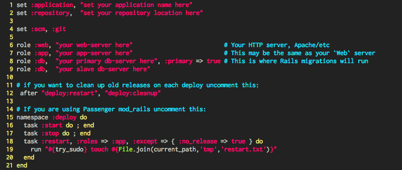
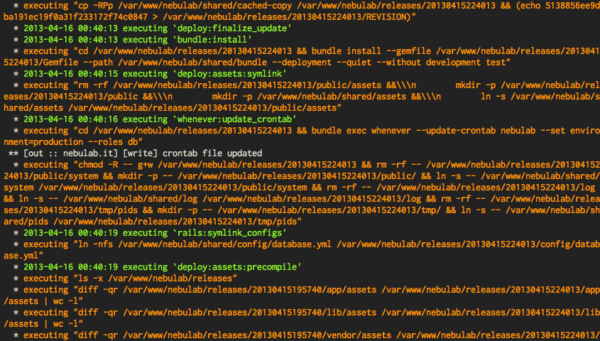
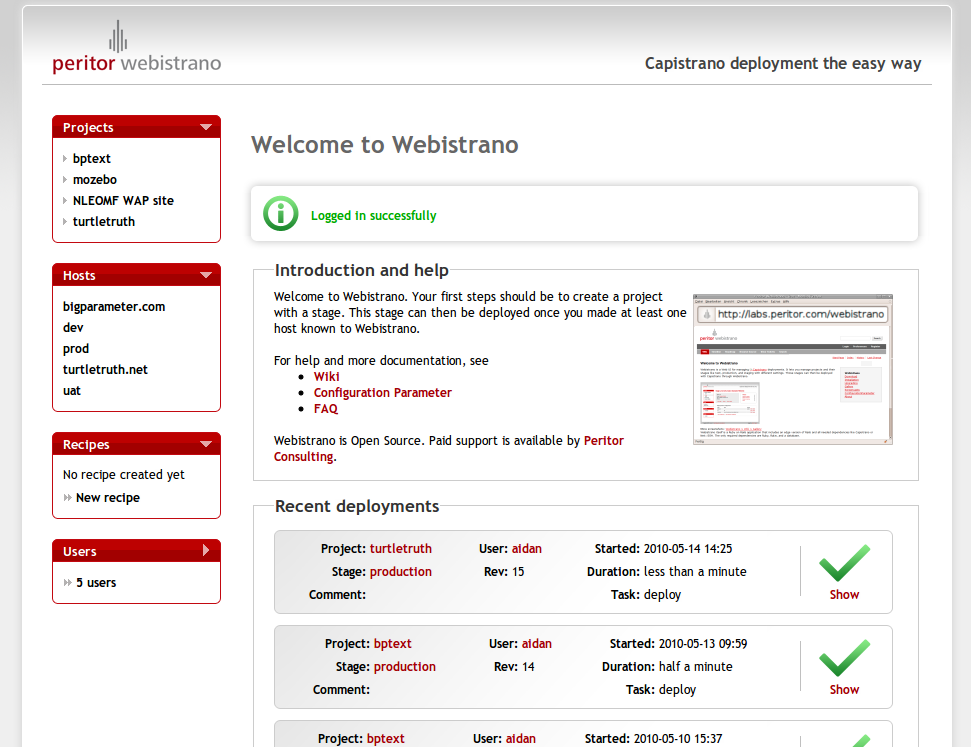
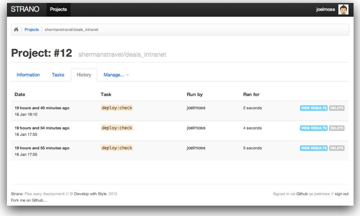
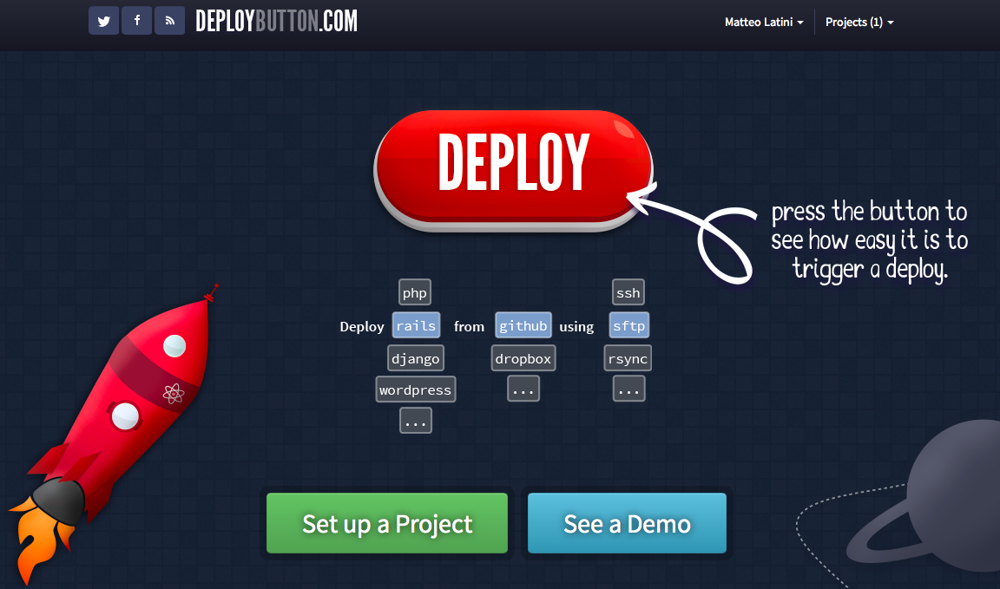
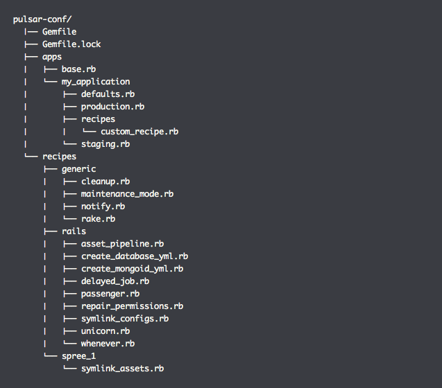
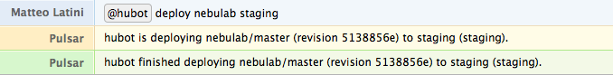

Pulsar
Deploy Capistrano facili
Chi sono

Matteo Latini -> tw: @matteolatini, gh: mtylty
Un backend developer + sistemista per NebuLab
Un giorno vorrei fare il sysop...
Sono appassionato di strategie e procedure di deploy
Intro
- cosa vuol dire deploy
- tecniche e tool a disposizione
- cosa usiamo a NebuLab
Premessa
Verranno trattate tecniche di deploy relative alla fase successiva alla configurazione dei server!
Cosa è il deploy
Il significato più comune del termine deployment in informatica è la consegna al cliente, con relativa installazione e messa in funzione, di una applicazione o di un sistema software. Lo si può considerare come una fase del ciclo di vita del software che conclude lo sviluppo e dà inizio alla manutenzione.
NO!
Non vendiamo software dagli scaffali!
Stiamo parlando di applicazioni web
É nato un nuovo paradigma...
SHIP IT!
SHIP IT FAST!
Oltre al setup, come consegnamo le nuove feature?
Ogni modifica deve andare online il prima possibile
Come aggiorniamo il codice?
PULL vs PUSH
Strategia PULL
Strategia PUSH
- il codice viene aggiornato "on demand"
- si ottiene con sofware come Capistrano
- sposta la responsabilità sul programmatore
- l'app contiene informazioni (delicate) relative al deploy
- bisogna gestire i permessi opportunamente
Capistrano
- tool con mentalità UNIX
- deploy PUSH tramite comandi SSH
- linguaggio di configurazione basato su task (come Rake)
- sistema di ruoli per la gestione di ambienti complessi
- gestione delle configurazioni a ricette
Quick howto (setup)
# Da dentro l'app
$ cd ./rails/app/path
# Installare capistrano
$ echo 'gem "capistrano"' >> Gemfile && bundle install
# Aggiungere i file necessari al deploy
$ capify .
[add] writing './Capfile'
[add] making directory './config'
[add] writing './config/deploy.rb'
[done] capified!
# Editare e modificare deploy.rb
$ <editor-preferito> ./config/deploy.rbDentro deploy.rb

Quick howto (deploy)
# Controllare se il server può ricevere un deploy
$ cap deploy:check
# Fare il setup del server
$ cap deploy:setup
# Fare danni sul server
$ cap deploy
# Altri task utili (molti altri con cap --tasks)
$ cap deploy:migrations
$ cap deploy:rollback
$ cap deploy:pending
$ cap shell
Capistrano FAIL
- niente gestione delle ricette
- configurazione contenuta nell'applicazione
- duplicazione ovunque
- bisogna avere l'app per fare i deploy
- fa sanguinare gli occhi!
WTF (Verbosità inutile)

Alcune soluzioni
Gem dedicata
- solo ricette se pubblica
- solo nel
Gemfilese privata - troppo custom, poche best practices
Webistrano

Webistrano is dead
Strano

Strano is Capistrano
- usa Capistrano da dentro i progetti
- comodo per avere diverse modalità di deploy
- stessi problemi di Capistrano
Deploy button

Deploy button
- tra i vincitori del Rails Rumble 2012
- supporta: ftp, ssh, capistrano, chef, heroku, ...
- perfetto ma non personalizzabile
Heaven Gem
- usata da Github per i deploy
- conserva le configurazioni private
- estremamente versatile e configurabile
- risolve quasi ogni lacuna di Capistrano
- ma non è open source :(
Pulsar
volevamo il paradiso ma era closed source...
Pulsar è una gem che gestisce configurazioni e ricette tramite un repository separato, al momento del deploy viene compilato un Capfile su cui viene chiamato Capistrano
Struttura directory

Deploy
$ PULSAR_CONF_REPO="gh_user/pulsar-conf" pulsar <application> <stage>git clone --quiet --depth=1bundle install --quiettouch /tmp/pulsar/capfile- Una serie di
catche appendono codice al Capfile cap --file /tmp/pulsar/capfile deploy
Voglio le mie ricette!
#
# Load deploy recipes
#
load_recipes do
generic :notify, :cleanup, :rake
rails :asset_pipeline, :unicorn, :whenever
utils :sync_assets, :sync_db
endPulsar WIN
- configurazione separata dall'app e sotto revisione
- configurazione strutturata e facile da gestire
- non è necessaria l'app per effettuare un deploy
- facile integrazione
- facile utilizzo
Deploy Action
Casi d'uso: Sistemista
# Installazione
$ gem install pulsar
# Utilizzo
$ pulsar nebulab staging
$ pulsar nebulab staging deploy:pending
$ pulsar nebulab production
$ pulsar nebulab production --tasks
$ pulsar-utils init
$ pulsar-utils list
Casi d'uso: Programmatore
# Installazione
$ bundle install
# Utilizzo
$ pulsar staging
$ pulsar staging deploy:pending
$ pulsar production
$ pulsar production --tasks
Casi d'uso: Noobs e Freelance

già disponibile integrazione con Hubot, facile integrazione con altre strategie di deploy
Sviluppi futuri
- esplorare integrazioni con sinatra
- gestione dei permessi da riga di comando
- maggiore velocità
- trovare altri contributors